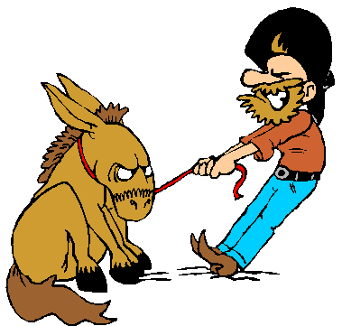

 Ít điều gì mệt mỏi bằng đi thuyết phục những người "cứng đầu". Nhưng bằng cách sử dụng các chiến thuật tâm lý sau đây, bạn có thể làm cho họ phải lắng nghe mình, một cách khách quan và công bằng, mà không vấp phải trở ngại. Khi bạn phải thuyết phục một người "cứng đầu", một người có thể có bốn xu hướng như sau: A. Người này nói "không" với mọi thứ, bất kể là thứ gì. Với họ, "mới mẻ" đồng nghĩa với "đáng sợ". Châm ngôn của anh/cô ta: Thay đổi là tồi tệ. B. Người này có vấn đề với một ai đó, bạn chẳng hạn. Bất kỳ bạn có quan điểm gì, ý nghĩa đến đâu, họ cũng không thèm nghe bạn. C Người này đã trải qua những tình huống mà họ cảm thấy mình bị mất ưu thế, bị chèn ép và những vết thương vẫn còn đó. Bất cứ điều gì trái với suy nghĩ bình thường của anh/cô ta không được đón nhận. Không tin vào khả năng tự quyết của mình, họ thường chọn cách né tránh để không bị gây ảnh hưởng. D. Người này không có vấn đề gì với bạn, nhưng toàn bộ ý tưởng của bạn, hoặc cái gì đó tương tự, "không phù hợp" với cách họ nhìn nhận về bản thân mình. Nếu bạn đã từng tranh luận với những người này, hẳn bạn sẽ thấy vô vọng. Bạn càng đưa ra nhiều lý lẽ, họ cãi càng khỏe. Kể cả bạn có hợp lý thế nào. Tất nhiên, trừ khi bạn làm đúng cách. Nếu bạn cho rằng sự phản kháng của một ai đó bắt nguồn từ các yếu tố A,B,C, đơn giản bạn chỉ cần sử dụng một chiến thuật hai bước để "định giá" lại suy nghĩ của anh/cô ta về bất cứ một niềm tin, ý tưởng, con người, nơi chốn hay sự vật nào. Bước 1: Nhiều nghiên cứu chỉ ra rằng, trước khi bạn đưa ra một yêu cầu, nếu bạn có thể khiến người kia đưa ra một khẳng định ăn khớp với yêu cầu mà bạn sắp nói, bạn có nhiều khả năng thành công - thay đổi được xu hướng của họ - hơn là bị phản kháng. Điều bạn cần làm là làm sao cho anh/cô ta đồng ý với một quan điểm mà sau đó sẽ trung hòa sự chống đối của anh/cô ta. Bất kể người kia cứng đầu như thế nào, bạn cũng có thể thay đổi suy nghĩ của họ chỉ với một chiến thuật này. Giả sử, trước khi đề xuất ý tưởng mới với sếp, hãy kể câu chuyện về một người bảo thủ sao cho sếp của bạn nhận xét rằng bảo thủ là một tính xấu. Sau đó, bạn sẽ thấy sếp của bạn cởi mở hơn rất nhiều khi bạn đưa ra ý tưởng, bởi vì khi ông ta đã đồng ý với một khẳng định tương tự trước đó, ông ta sẽ bị chi phối để hành động sao cho phù hợp. Có điều này là bởi con người có nhu cầu mạnh mẽ được phù hợp với xu hướng, niềm tin và hành động của họ. Nếu một ai đó nghĩ một đằng, làm một nẻo, chúng ta sẽ coi họ là lẩn thẩn, mất trí. Chúng ta cũng nhìn nhận tương tự về bản thân mình. Khi chúng ta công khai một nhận định, xu hướng của chúng ta tự đón nhận nó và sau đó ảnh hưởng tới hành động của chúng ta. Tùy vào tình huống, bạn có thể gợi ra nhiều câu hỏi chi tiết hơn và tạo ra trạng thái này trong người bạn muốn thuyết phục. Bước 2: Giới hạn khả năng của anh ta trong lĩnh vực mà anh ta không muốn chấp nhận. Một người cứng đầu vì anh ta nghĩ mình có thể làm được điều đó nhưng chẳng qua anh ta không muốn làm (tức là anh ta có thể làm, nhưng làm hay không là quyền của anh ta). Không thể cứng đầu về một việc bạn không có khả năng làm. Và hơn thế, giới hạn này cũng tạo ra ước muốn phá vỡ nó. Một người không muốn rời khỏi nhà vì anh ta không thích. Nhưng nếu việc tự do được ra khỏi nhà của anh ta bị giới hạn, cái tôi sẽ lên tiếng và tạo ra ước muốn có thể ra khỏi nhà. Và ước muốn có thể ra khỏi nhà sẽ chuyển thành ước muốn được ra khỏi nhà. (Lời người dịch: Các bạn đã hiểu vì sao người ta thích xem phim 18+ chưa? ) Trở lại với ví dụ người sếp, sau khi đã khiến ông ta đồng ý với các nhận định của bạn ở bước một, bạn tiếp tục nói về một chuyến đi chơi: "Em nghĩ là ai cũng muốn đi picnic, nhưng mà em nghĩ công ty mình khó có thể (1) tìm được chỗ để xe, (2) khó tìm được sân bãi, (3) khó tìm được MC dẫn chương trình...". Và chờ kết quả xem. Dưới đây 6 mẹo liên quan, có thể thay đổi ý kiến của kể cả những người khó tính nhất: 1. Nếu một người ngồi yên quá lâu, hãy làm họ thay đổi vị trí. Trạng thái cảm xúc của một người có liên quan trực tiếp với trạng thái của cơ thể. Nếu tư thế của một người cố định, suy nghĩ của họ rất dễ bị đóng băng. Nhiều nghiên cứu chỉ ra rằng, cách dễ nhất để thay đổi quan điểm của một người là làm họ di chuyển. Nếu họ đang đứng lên, hãy tìm cách làm họ ngồi xuống. Nếu họ đang ngồi, hãy làm sao để họ đứng lên và đi lại (lời người dịch: Vì lý do này mà nhiều người cảm thấy khi đi đi lại lại thì họ nhanh thuộc bài hơn). 2. Cung cấp thêm thông tin. Không ai muốn người ta nghĩ mình là "dễ dãi", tức là nếu họ thay đổi ý kiến chỉ với những thông tin sẵn có, thì họ sẽ nghĩ điều đó không ăn khớp với họ trước đây. Cung cấp thêm thông tin, có nghĩa là gjúp họ đưa ra quyết định mới dựa trên những thông tin bổ sung chứ không phải thay đổi quyết định cũ. Hãy đưa thêm dữ liệu và giúp họ nhớ lại những gì họ đã quên. 3. Các nghiên cứu chỉ ra rằng nhận thức bản thân của chúng ta càng cao thì chúng ta càng dễ tiếp nhận cái mới. Hãy để cho người đó thấy bản thân mình - theo nghĩa đen. Nói chuyện trước một tấm gương, hoặc bất cứ cái gì có thể phản chiếu hình ảnh sẽ làm tăng khả năng thuyết phục thành công của bạn. 4. Cialdini, Green và Rusch (1992) chỉ ra rằng nếu một ai đó đã từng thuyết phục thành công chúng ta trong quá khứ, họ sẽ dễ bị chúng ta thuyết phục hơn. Vì vậy hãy nói đại loại "Tôi đã từng nghe quan điểm của bạn - chúng thay đổi tôi rất nhiều - tôi nghĩ bạn đã đúng". 5. Các nghiên cứu chỉ ra rằng khi một người cứng đầu đưa ra các quan điểm đối lập, bạn nên tạo ra một cuộc tranh luận hai phía (tức là xem xét cả ưu điểm trong những ý kiến của anh ta nữa), do ý kiến đối lập của họ ít nhất phải có một phần dựa trên thực tế. Hãy xem xét tính đúng đắn của cả hai - tất nhiên đặt của bạn lên trước - bạn sẽ thấy đối phương mềm dẻo hơn. 6. Làm một người nghĩ rằng anh ta có trách nhiệm với ý tưởng của bạn, theo một cách nào đó. Điều này mang nhiều ý nghĩa: Quan trọng là anh ta sẽ có ý thức mạnh mẽ hơn khi có mục đích, hành động của anh ta lúc này sẽ tự động ăn khớp với niềm tin. Đó là với các dạng A,B,C, còn dạng D thì sao? Dạng D hơi khác một chút - đó là vì nếu người đó chịu nghe theo lời bạn thì điều đó sẽ đi ngược lại với cách họ nhận thức về mình. Thường thì chúng ta sẽ cố gắng chỉ ra cho họ rằng những gì họ làm không phản ánh họ, nhưng đây là một chiến thuật vô ích, vì sự lo lắng sẽ làm cho những gì bạn thuyết phục họ còn cách xa những gì họ nghĩ về con người họ hơn. Có một phương pháp tâm lý như sau: Đa phần chúng ta tin rằng mình là người tốt. Vì thế, tất nhiên chúng ta sẽ không giết người khác. Có hoàn cảnh nào mà chúng ta cho phép mình giết người không? Nếu bạn và gia đình của bạn bị đe dọa tính mạng bởi một tên giết người hàng loạt chẳng hạn? Khi đó, bạn có thể giết hẳn mà vẫn giữ những giá trị của mình. Bằng cách thay đổi tình huống, bạn có thể làm cho một hành động từ không được phép trở thành được phép, hơn thế còn cần thiết nữa. Tóm lại, bạn phải gắn đề nghị của mình với một giá trị lớn hơn quan trọng hơn với người đó. Vẫn không thể thuyết phục được người đó? Đúng là có những thời điểm mà họ sẽ không thể bị lay chuyển, vì thế hãy tiết kiệm năng lượng của mình bằng cách sử dụng một phương pháp gọi là phép thử crowbar. Như thế này: Hãy nói với người đó rằng nếu bạn làm được một điều gì đó phi thường, người đó sẽ chấp nhận một yêu cầu của bạn (ví dụ bảo người đó nghĩ trong đầu một con số bất kỳ cho bạn đoán chẳng hạn). Chẳng hạn, một vài người sẽ phòng vệ trước những đề nghị của bạn vì họ biết họ dễ bị lừa, nhưng họ sẽ dễ nhận lời trước đề nghị nói trên, bởi vì xác suất thành công của bạn rất thấp. Nhưng khi người đó nhận lời, thì hệ thống niềm tin của họ đã bị chỉnh lại một chút, từ "không" đã trở thành "có lẽ", và bạn có thể thuyết phục người đó. Nếu người đó không nhận lời, có nghĩa người đó đang ở thời điểm không thể bị lay chuyển, và bạn nên chờ lúc khác. Theo bài viết của TS D.J.Lieberman. Chia sẻ xin ghi đường link bài viết trên diễn đàn.
Bạn vẫn chưa hiểu tại sao người ta thích xem phim 18+ )... Còn cái cách 1 thì giống như trong bài James-Lang mình có viết đó là trạng thái cơ thể ảnh hưởng đến cảm xúc. Cái 4 thì hình như là ai đó đã bị chúng ta thuyết phục thì các lần sau dễ thuyết phục hơn chứ nhỉ.
- Có ích với mình nhưng sẽ vô dụng nếu mình là người cần thuyết phục. Vì từ đầu mình luôn dựa trên phân tích hợp lý để đưa ra quyết định nên dù họ làm trạng thái cảm xúc của mình thay đổi thì tính logic của vẫn đề cũng không khác đi. Nếu họ làm một trò chơi, đoán số, mình sẽ càng nghi ngờ năng lực của họ vì đưa tính may rủi vào công việc. Mình là một kẻ cứng đầu ^^ - Mẹo thứ 5 cũng có thể khiến bạn bị thuyết phục ngược lại.
@Winter Hexagon : Đây là bí quyết để lời nói của người thuyết phục được lắng nghe một cách khách quan và công bằng, tức là không bị gạt bỏ đi một cách vô lý (kiểu không thích nên không nghe), chứ không phải bí quyết để người bị thuyết phục luôn làm theo lời người thuyết phục. Nếu người thuyết phục đưa ra quan điểm tào lao thì có sử dụng bí quyết gì cũng vậy thôi. @Ngọc Tiến : Cái này là luật giới hạn đó. Cái gì càng bị giới hạn, người ta càng muốn có. Nên các doanh nghiệp hay lợi dụng tâm lý này (ví dụ bán với giá ưu đãi trong một thời gian ngắn, hoặc sản phẩm chỉ dành cho một số đối tượng nào đó, hoặc sản phẩm chỉ có x chiếc trên thị trường....). Ngoài ra nó chi phối nhiều mặt cuộc sống nữa. Mẹo thứ 4 thì tên nguyên gốc của nó là "Thuyết phục qua lại". Những ai từng thuyết phục được mình thì mình nói họ sẽ dễ nghe hơn (Không biết vì sao, nghiên cứu bảo thế).